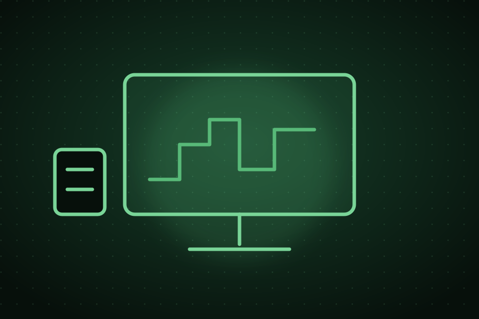

Área para empresas
Abrir Chamado empresarial
Registre um problema de informática da sua empresa para atendimento remoto ou presencial. O retorno e a confirmação são feitos pelo WhatsApp informado.

Suporte de TI quando sua empresa precisar.Chamados organizados • presencial ou remoto
1Empresa
2Problema
3Atendimento
4Revisão
5Confirmação
1
Dados da empresa
Informe quem está solicitando o chamado. O CNPJ é opcional.
Como este chamado será utilizado?
2
Equipamento e problema
Selecione o equipamento e o problema principal. 1 problema = 1 chamado.
3
Impacto e prioridade
Isso ajuda a PD a entender a urgência do chamado.
◎Sem loginProcesso direto pelo portal
▤CNPJ opcionalDados essenciais para contato
◉Retorno pelo WhatsAppConfirmação e acompanhamento
Técnico de informática autônomo • atendimento mediante agendamentoO envio deste chamado não confirma automaticamente o atendimento. Após a revisão e o envio, a PD entrará em contato pelo WhatsApp informado.
Protocolo online em homologação
Contato pelo WhatsApp
Contato pelo WhatsApp